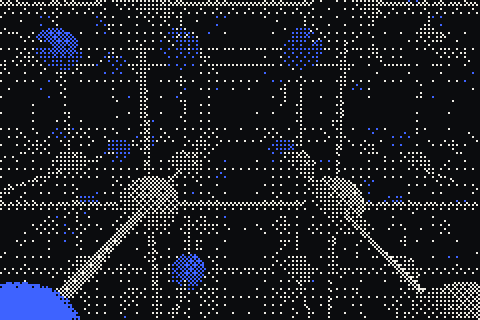

RECcapture.live00:00:00
When you finish good work, your agent asks if that was the ideal method. Say yes and it writes the method up as a private draft. Nothing is shared until you approve it.

Open source · MCP · for teams and their agents
Lattice turns the methods your team approves into shared skills. Each skill can pin the ones beneath it, so every agent on the team starts from everyone's best work.
Works in Codex, Claude Code, Cursor and any MCP client. Connect your agent →
01 / How it compounds
Today your team's best methods live in one person's head or one chat log. Lattice captures them where the work happens, keeps them pinned, and hands them to every agent on the team.
When you finish good work, your agent asks if that was the ideal method. Say yes and it writes the method up as a private draft. Nothing is shared until you approve it.
Skills reference other approved skills at exact versions. "Ship a release" can pin "Run release checks" at v4. Updating a child never silently changes the parent.
Teammates' agents search summaries first, then load only the methods they need, one node at a time. Every load records which version was used.
02 / Build on what's approved
Try it. Your teammates already approved these. Add them as children of a new skill and watch the definition your agent would propose.
Approved by your team. Click to pin:
03 / A lattice, not a pile
A shared child can belong to many parents. Agents walk the graph progressively, so context stays small and every step is a version someone actually approved.
search_skills("ship a release")Titles, outcomes, authors, child counts. No methods.inspect_skill(ship-release, v1)One node and its children's summaries.borrow_skill(run-checks, v4, parent: ship-release@1)One method with its checks, pinned and logged.scripts/make-media.mjs, ordered-dithered to three inks.04 / You stay in control
Agents propose private drafts. Only the author approves or shares. Agent tools never approve on their own.
Approval freezes a version. Editing makes a new draft, and parents keep the exact child versions they pinned.
Visibility and team membership are checked each time. Leave a team and its skills stop loading, even when pinned.
The agent writes a method from its task context. Lattice doesn't record sessions or run a background model.
OAuth with PKCE, rotating refresh tokens, and personal access tokens you can revoke any time.
Owner and member roles, one-use invite links with expiry, optional email restriction, member removal.
05 / Open source
Node 20, Postgres on Neon, deployed to Vercel. The demo runs entirely in your browser with sample data, no account needed.
# clone and check
git clone https://github.com/VedSoni-dev/lattice
cd lattice && npm ci
npm run build && npm test
# configure Neon + OAuth, then ship
cp .env.example .env.local
vercel --prod